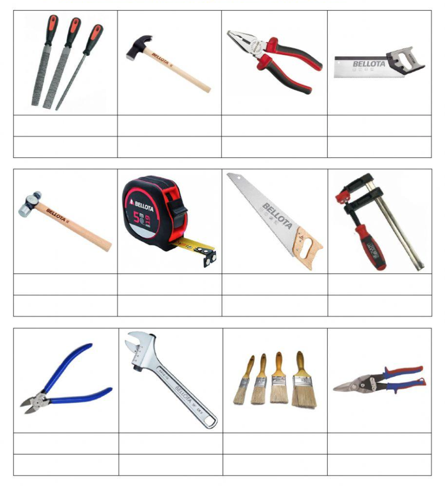

1. Clasificación de los materiales
Los objetos que utilizamos habitualmente se fabrican a partir de distintos materiales. Estos materiales tienen su origen en la naturaleza, de donde obtenemos las materias primas (como la lana, la madera, el corcho, la arcilla, etc.). A partir de esas materias se obtienen materiales naturales y materiales transformados.
Algunos objetos se construyen directamente con materiales naturales. Sin embargo, la mayoría de las veces, los materiales sufren modificaciones. A estos los llamamos materiales transformados, que pueden ser artificiales o sintéticos.
Desde el punto de vista técnico, los materiales se pueden clasificar en cinco grandes grupos:
- Maderas. Son materiales naturales que provienen de los árboles. Sus principales derivados son el papel y el cartón.
- Metales. Se obtienen de los minerales extraídos de las minas, que después se transforman para su posterior aplicación.
- Plásticos. Son materiales sintéticos que se obtienen fundamentalmente del petróleo y del carbón.
- Materiales pétreos y cerámicos. Son también de origen natural, los primeros constituidos fundamentalmente por piedra y arena, y los segundos, por arcilla.
- Materiales textiles. Algunos se obtienen directamente de materias primas como el algodón, la lana, el lino, la seda, etc., pero una gran mayoría es de origen artificial y sintético como el rayón, el poliéster, la poliamida, etc.
Materiales reciclados
También hay que tener en cuenta que a partir de objetos ya utilizados se pueden generar nuevos materiales, los materiales reciclados. Es decir que, mediante procesos de transformación, los objetos usados se pueden aprovechar para fabricar nuevos objetos.
2. Propiedades de los materiales
En la tabla inferior se relacionan una serie de objetos que han sido diseñados y fabricados con materiales diversos. La elección de estos materiales viene determinada, en cada caso, por sus propiedades. De este modo, cada objeto podrá cumplir con la función para la que ha sido diseñado.
Las propiedades de los materiales son el conjunto de características mediante las cuales los podemos definir y distinguir unos de otros.
Ejemplos de Aplicación
- Destornillador de electricista: El mango y el vástago recubiertos de plástico (aislante eléctrico). La cabeza ha de ser dura y resistente.
- Olla: De acero inoxidable (buen conductor del calor). Las asas de plástico (mal conductor del calor).
- Cable eléctrico: Hilos finos de cobre (buen conductor eléctrico) recubiertos de un aislante plástico.
- Cuadro de una bicicleta: De acero, fibra de carbono o titanio. Son materiales ligeros y soportan bien los esfuerzos.
- Martillo: La cabeza ha de ser muy dura y resistente al golpear.

Podemos clasificar las propiedades de los materiales en cinco grupos:
| Fisicoquímicas | Mecánicas | Tecnológicas | Sensoriales | Ecológicas |
|---|---|---|---|---|
| Muestran el comportamiento de los materiales cuando son sometidos a agentes externos como el calor, la corriente eléctrica, la gravedad, la humedad, etc. | Son un grupo específico de propiedades físicas que muestran el comportamiento de los materiales sometidos a la acción de diversas fuerzas. | Definen el comportamiento de los materiales cuando se trabajan para darles forma. | Se refieren a la percepción que causan los materiales en nuestros sentidos. | Se relacionan con el impacto ambiental que pueden tener los materiales durante su obtención, transformación y uso. |
|
|
|
|
|
2.1 Propiedades físicas y químicas
1. Densidad: Indica si un material tiene más masa que otro para un determinado volumen. Se calcula: densidad = masa(kg) / volumen(m^3)
2. Conductividad térmica: Capacidad de transmitir el calor. Los metales son buenos conductores; la madera y el plástico son aislantes térmicos.
3. Dilatación térmica: Propiedad de aumentar su volumen cuando se calientan. Tiene especial incidencia en los metales.
4. Temperatura de fusión: Temperatura a la cual un material pasa del estado sólido al líquido. El punto de fusión del agua es a 0 °C.
5. Conductividad eléctrica: Capacidad de dejar pasar la corriente eléctrica. Los metales son buenos conductores; la madera es un aislante.
6. Oxidación: Reacción de un material al combinarse con oxígeno, transformándose en óxido. Los metales crean una capa superficial de óxido.
7. Corrosión: Si la oxidación se realiza en presencia de agua. Es más peligrosa porque la capa de óxido se desprende del material.
2.2 Propiedades mecánicas
1. Dureza: Resistencia que ofrecen a ser rayados o penetrados. Los materiales duros rayan a los blandos.
2. Tenacidad: Propiedad de sufrir golpes o impactos sin romperse. Los materiales que no la resisten se llaman frágiles.
3. Elasticidad: Propiedad de recuperar su forma original después de ser deformados. Si la deformación persiste, se llaman materiales plásticos.
4. Resistencia mecánica: Propiedad para soportar esfuerzos sin deformarse excesivamente ni romperse.
2.3 Propiedades tecnológicas
1. Maleabilidad: Capacidad de extenderse fácilmente en láminas al aplicar presión. Ejemplo: el papel de aluminio, metales y plásticos.
2. Fusibilidad: Propiedad de pasar de estado sólido a líquido a ciertas temperaturas, permitiendo ser vertidos en moldes. Ejemplo: bronce, latón y hierro.
3. Ductilidad: Cualidad de extenderse para formar hilos. Ejemplo: oro, plata, cobre, y también los plásticos.
4. Soldabilidad: Capacidad de poder ser soldados. Ejemplo: los aceros y los plásticos.
2.4 Resistencia mecánica: esfuerzos
Los elementos de las estructuras están sometidos a la acción de fuerzas externas que tienden a deformarlos o desplazarlos. Estos elementos están sometidos a unos esfuerzos. Los esfuerzos elementales son:
Esfuerzo al que está sometido un elemento cuando las fuerzas que actúan sobre él tienden a estirarlo.
Esfuerzo al que está sometido un elemento cuando las fuerzas que actúan sobre él tienden a cortarlo.
Esfuerzo al que está sometido un elemento cuando las fuerzas que actúan sobre él tienden a comprimirlo.
Esfuerzo al que está sometido un elemento cuando las fuerzas que actúan sobre él tienden a curvarlo.
Esfuerzo al que está sometido un elemento cuando las fuerzas que actúan sobre él tienden a retorcerlo.
2.5 Propiedades sensoriales y ecológicas
Aunque parezca que las propiedades sensoriales son las menos importantes, la mayoría de las veces elegimos un producto por su aspecto o por la impresión que nos produce. El color, el brillo, la textura o el olor son algunas de estas propiedades.
Las propiedades ecológicas indican hasta qué punto un material es perjudicial para la naturaleza (en su obtención, transformación o uso). Hay que tenerlas en cuenta cada vez más, pues la explotación excesiva de los recursos y los residuos desbocados ocasionan daños irreparables.
Atendiendo a su impacto sobre la naturaleza podemos distinguir los siguientes aspectos:
Propiedad de volver a ser utilizados para el mismo uso u uno diferente siempre y cuando no deban transformarse. Por ejemplo, la ropa en buen estado que donamos.
Propiedad para que, después de ser usados, puedan pasar por un proceso de transformación para hacerlos útiles de nuevo. Por ejemplo, muebles de madera transformados en tableros artificiales.
Facilidad para descomponerse en sustancias más simples sin ser perjudiciales. Por ejemplo, el papel tarda 1-5 meses, mientras que una botella de plástico puede tardar más de 400 años.
Algunos materiales pueden resultar muy nocivos para el medio ambiente y los seres vivos. Por ejemplo, la uralita (que contenía amianto) se prohibió por ser un material muy tóxico.
3. Ciclo de Vida: De la Cuna a la Tumba
El ciclo de vida de un producto describe las etapas por las que pasa un producto desde su creación hasta su retirada del mercado, similar a la vida de un ser vivo.
El concepto "De la Cuna a la Tumba" (Cradle-to-Grave) es una metodología de evaluación clave en el estudio del impacto ambiental, conocida comúnmente como Análisis del Ciclo de Vida (ACV).
Un Análisis del Ciclo de Vida (ACV) es un análisis exhaustivo y sistemático de todos los impactos ambientales que genera un producto o servicio a lo largo de todas sus etapas, desde la obtención de las materias primas hasta su disposición final.
Este análisis desglosa la vida del producto en fases clave para identificar los puntos críticos de consumo de energía, agua y generación de residuos.
Etapas del Ciclo de Vida
| Etapa | Descripción del Proceso | Impacto Ambiental Clave |
|---|---|---|
| Cuna (Extracción) | Obtención de las materias primas necesarias (minería, tala, agricultura, etc.). | Agotamiento de recursos, alteración de ecosistemas, consumo de energía. |
| Fabricación | Transformación de las materias primas en el producto final. | Consumo de energía y agua, generación de residuos y emisiones contaminantes. |
| Distribución | Transporte del producto desde el punto de fabricación hasta el consumidor. | Emisiones de GEI (huella de carbono) por combustibles fósiles. |
| Uso | El periodo en que el producto es utilizado por el consumidor. | Consumo de energía y agua (si aplica), necesidad de mantenimiento. |
| Tumba (Fin de la vida útil) | Desecho del producto una vez que ya no es útil. | Relleno sanitario (vertederos), incineración, contaminación por lixiviados. |
Nota Contraste: Este enfoque "Cuna a la Tumba" contrasta con el modelo de "Cuna a la Cuna" (Cradle-to-Cradle), que busca diseñar productos de manera que, al final de su vida útil, sus materiales puedan ser completamente reutilizados o reciclados, cerrando el ciclo y eliminando la fase de "Tumba".
4. Huella de Carbono y Huella Hídrica
Ambos son indicadores clave de sostenibilidad que miden el impacto ambiental de nuestras actividades, empresas o productos. Nos permiten cuantificar nuestra demanda sobre los recursos del planeta.
A. Huella de Carbono
Es la totalidad de Gases de Efecto Invernadero (GEI) emitidos, directa o indirectamente, por una persona, organización, evento o producto.
- Unidad de Medida: Se expresa en masa de dióxido de carbono equivalente (CO2).
- Relevancia: Es el principal indicador para medir la contribución al calentamiento global y el cambio climático. Reducirla implica usar energías limpias y mejorar la eficiencia energética.
HUELLA DE CARBONO: Qué es y cómo REDUCIRLA.
B. Huella Hídrica
Es el volumen total de agua dulce utilizada, directa e indirectamente, para producir los bienes y servicios consumidos por una persona o producidos por una empresa.
- Unidad de Medida: Se expresa en volumen de agua (litros o metros cúbicos).
-
Componentes: Se desglosa en tres tipos:
- Verde: Agua de lluvia almacenada en el suelo (agricultura).
- Azul: Agua extraída de fuentes superficiales o subterráneas (riego, industria).
- Gris: Agua necesaria para diluir los contaminantes vertidos.
Huella Hídrica.
5. Las 5R de la Sostenibilidad
Las 5R representan una jerarquía de acciones orientadas a la gestión de residuos y el consumo consciente. Este modelo expande las clásicas "3R" (Reducir, Reutilizar, Reciclar) para ofrecer un marco de acción más completo.
El principio fundamental es la jerarquía: la mejor acción es siempre la que previene la generación de residuos en primer lugar (Rechazar y Reducir) antes que gestionar los residuos ya creados (Reciclar).
Jerarquía de Acciones
| Prioridad | "R" (Español) | "R" (Inglés) | Descripción y Acción |
|---|---|---|---|
| 1. | Rechazar | Refuse | La acción más importante: Evitar productos innecesarios o con embalajes excesivos (ej. rechazar bolsas plásticas o flyers). |
| 2. | Reducir | Reduce | Disminuir la cantidad de productos que se consumen, impactando directamente en la reducción de las huellas de carbono/hídrica. |
| 3. | Reutilizar | Reuse | Usar un producto más de una vez, ya sea para su propósito original o para uno diferente (ej. usar frascos de vidrio para almacenar). |
| 4. | Reparar / Reaprovechar | Repair / Repurpose | Arreglar un objeto dañado en lugar de tirarlo, o darle un nuevo uso creativo a un artículo (ej. convertir ropa vieja en trapos). |
| 5. | Reciclar | Recycle | Transformar el material desechado en un nuevo producto, evitando el uso de materia prima virgen (esta debe ser la última opción). |
Actividad 1
Tecnología y Proceso Tecnológico
- Anota en tu cuaderno las definiciones de Tecnología y Proceso tecnológico.
- ¿Cuál es el principal problema que aborda el video con respecto a la producción y el consumo actuales?
- ¿Qué cantidad de comida desecha una persona promedio al año y qué problemas ambientales causa este desperdicio?
- ¿Qué tipo de productos se recomiendan comprar para ayudar a mejorar los hábitos de consumo?
- ¿Cómo se compara la huella material de los países desarrollados con la de los países más empobrecidos?
- ¿Qué papel juegan las grandes empresas en la producción sostenible y qué directiva ha adoptado la Unión Europea al respecto?
- ¿Qué acciones individuales se sugieren en el video para contribuir a una producción y consumo responsables?
Actividad 2
Fases del Proceso Tecnológico
-
Describe al menos una necesidad que satisface cada uno de los siguientes productos:
- a) Aparato de radio
- b) Plano de una ciudad
- c) Carretilla
- d) Aguja de coser
- e) Pendientes
- f) Zapatos
-
Relaciona cada una de las siguientes actividades con la fuente de información correspondiente:
ACTIVIDADES
- Reparar una estufa eléctrica
- Cocinar una dorada a la sal
- Planificar un itinerario turístico
- Construir una maqueta de la torre Eiffel
- Efectuar el montaje de una silla en kit
FUENTE DE INFORMACIÓN
- Seguir el manual de instrucciones
- Preguntar a un electricista
- Consultar un recetario de cocina
- Visitar una agencia de viajes
- Entrar en http://www.tour-eiffel.fr
-
Describe ordenadamente las operaciones que se han de realizar para construir, en un tablero contrachapado, el juego de tangram de la figura:

- Enumera y describe con tus palabras las fases del proceso tecnológico.
Activity 3
Workshop Tools
- Draw and label each of the tools from the list in your notebook, grouping them by their corresponding category. 
Actividad 4
Trabajar con Seguridad
-
Observa con atención la imagen del taller que se proyecta en la pizarra. Parece que hoy nadie se ha preocupado por la seguridad. En grupos de 4, identificad todos los peligros y situaciones de riesgo que podáis encontrar. ¿Qué podría salir mal? ¡Vamos a descubrirlo juntos!

Actividad 5
La Señalización de Seguridad
-
Ahora os convertiréis en expertos en seguridad. Cada equipo recibirá un riesgo específico que podemos encontrar en el taller (cortes, riesgo eléctrico, caídas, etc.). Vuestra misión será crear un póster informativo y visual en una cartulina para concienciar sobre ese peligro. El póster debe incluir:
- El nombre del riesgo escrito de forma clara y grande.
- La señal de advertencia que le corresponde (podéis dibujarla o pegar la que os daremos).
- Tres normas básicas y claras para prevenir ese riesgo.
- La señal de obligación más importante para evitarlo (por ejemplo, si el riesgo es de cortes, la señal de 'usar guantes').
Actividad 6
Proyecto

Proyecto: Eco-Amplificador de Sonido
Diseño y Construcción con Materiales Reciclados
Objetivo Principal
Diseñar y construir un amplificador de sonido pasivo (sin electricidad) para un teléfono móvil, utilizando materiales reciclados. El proyecto servirá para aplicar de forma práctica todas las fases del proceso tecnológico en la creación de un objeto útil que funciona basándose en principios físicos de la acústica.
Descripción del Proyecto
Crearás un soporte para tu teléfono móvil que, gracias a su forma, es capaz de canalizar y amplificar el sonido de forma natural. El diseño se inspirará en la forma de una corneta o un gramófono, demostrando que se puede mejorar una funcionalidad tecnológica sin recurrir a la electricidad.

Aplicación de las Fases del Proceso Tecnológico
1. Fase: Identificación de la Necesidad
Problema: "El altavoz de mi teléfono móvil no tiene suficiente volumen. Necesito una solución barata, portátil y ecológica para aumentar el sonido sin usar baterías ni enchufes".
2. Fase: Búsqueda de Información y Análisis
- Principios físicos: Investigar cómo funciona la amplificación pasiva del sonido.
- Soluciones existentes: Buscar en internet ejemplos de "amplificador pasivo para móvil".
- Análisis de materiales reciclados: Estudiar qué materiales son los más adecuados (tubos de cartón, vasos, botellas...).
3. Fase: Diseño de las Ideas
- Lluvia de ideas: Dibuja al menos tres bocetos con diferentes enfoques.
- Selección de la idea: Elige el diseño más eficiente, estable y factible.
- Croquis y planos: Realiza un dibujo técnico final acotado, midiendo con precisión tu móvil. Sigue esta sencilla guía para hacer tu croquis acotado.
4. Fase: Planificación y Organización
- Hoja de procesos: Redacta una lista numerada con todos los pasos de la construcción.
- Lista de materiales: Concreta los materiales reciclados que usarás.
- Lista de herramientas: Especifica las herramientas necesarias (regla, cúter, pistola de silicona...).
5. Fase: Construcción
Siguiendo tus planos y la hoja de procesos, construye tu amplificador. ¡Recuerda seguir las normas de seguridad al usar herramientas de corte!
6. Fase: Verificación y Evaluación
Llega la prueba funcional. Coloca el teléfono, pon una canción y compara el volumen. ¿Funciona? ¿Se sujeta bien el móvil? ¿Qué podrías mejorar?
7. Fase: Divulgación y Memoria Técnica
- Elaboración de una memoria técnica: Redacta un documento que recoja todo el proceso.
- Presentación en clase: Expón tu proyecto y realiza una demostración en directo.
Niveles de Logro y Evaluación
- Nivel Básico (Hasta 6 puntos): Entrega de un amplificador funcional que cumple su objetivo y el plano técnico final (croquis acotado) con las medidas correctas.
- Nivel Avanzado (Hasta 8 puntos): Cumple lo anterior y, además, presenta la investigación y los bocetos iniciales. El acabado estético y la estabilidad del amplificador son notables.
- Nivel Experto (Hasta 10 puntos): Cumple todo lo anterior y entrega una memoria técnica completa y bien documentada, realizando una excelente presentación oral del proyecto con demostración.
Evaluación del Proceso de Aprendizaje
Criterios de Evaluación y Rúbricas
Criterio 1.1
Definir problemas sencillos o necesidades básicas planteadas, buscando y contrastando información procedente de diferentes fuentes fácilmente accesibles de manera crítica y segura, evaluando su fiabilidad y pertinencia.
Instrumentos de Observación:
- Búsqueda y tratamiento de la información.
- Trabajos escritos y de investigación.
- Intervenciones en clase y exposiciones orales.
- Pruebas orales y escritas.
- Hábitos, actitud y autonomía personal.
- Cuaderno del alumnado.
Apenas logra definir problemas. No busca ni contrasta información de manera crítica y no evalúa la fiabilidad de las fuentes.
Define problemas de manera limitada. Busca y contrasta información de forma básica, con un enfoque crítico limitado.
Define problemas de manera eficaz. Busca y contrasta información de manera satisfactoria, demostrando un enfoque crítico y seguro.
Destaca al definir problemas con solidez. Busca y contrasta información de manera destacada, mostrando un enfoque crítico innovador.
Dominio excepcional al definir problemas. Busca y contrasta información de manera excepcionalmente profunda, crítica y segura.
Criterio 1.2
Comprender y examinar productos tecnológicos de uso habitual a través del análisis de objetos básicos y sistema sencillos, empleando el método científico y utilizando herramientas elementales de simulación en la construcción de conocimiento.
Instrumentos de Observación:
- Trabajos escritos y de investigación.
- Pruebas orales y escritas.
- Intervenciones en clase: exposición oral.
- Uso de las TIC y las TAC.
- Cuaderno del alumnado y Observación en Taller.
Apenas logra comprender o examinar productos tecnológicos. No utiliza el método científico ni herramientas de simulación.
Comprende y examina productos de manera limitada. Utiliza de manera básica el método científico y herramientas de simulación.
Comprende y examina productos de manera eficaz. Utiliza de manera satisfactoria el método científico y herramientas de simulación.
Destaca al comprender y examinar productos con solidez. Utiliza de manera destacada el método científico y herramientas de simulación.
Dominio excepcional al comprender y examinar productos. Utiliza de manera excepcional el método científico y las herramientas.
Criterio 1.3
Adoptar medidas preventivas para la protección de los dispositivos, los datos y la salud personal, identificando problemas y riesgos relacionados con el uso de la tecnología y analizándolos de manera ética y crítica.
Instrumentos de Observación:
- Trabajos escritos y de investigación.
- Intervenciones en clase: exposición oral.
- Hábitos personales, actitud y autonomía personal.
- Cuaderno del alumnado y Observación en Taller.
Apenas adopta medidas preventivas. No identifica problemas ni riesgos. El análisis ético y crítico es ausente o superficial.
Adopta medidas preventivas de manera limitada. Identifica problemas y riesgos de forma básica. El análisis ético y crítico es básico.
Adopta medidas preventivas de manera eficaz. Identifica problemas y riesgos de forma satisfactoria. El análisis ético y crítico es claro.
Destaca al adoptar medidas preventivas con solidez. Identifica problemas y riesgos de forma destacada. El análisis ético es innovador.
Dominio excepcional al adoptar medidas preventivas. Identifica problemas de manera profunda y su análisis ético es riguroso.
Criterio 2.1
Idear y diseñar soluciones eficaces, innovadoras y sostenibles a problemas sencillos definidos, introduciendo la aplicación de conceptos, técnicas y procedimientos interdisciplinares, así como criterios de sostenibilidad con actitud emprendedora, perseverante y creativa.
Instrumentos de Observación:
- Búsqueda y tratamiento de la información.
- Trabajos escritos y de investigación.
- Intervenciones en clase: exposición oral.
- Uso de las TIC y las TAC.
- Hábitos, actitud y autonomía personal.
- Cuaderno del alumnado y Observación en Taller.
Apenas logra idear ni diseñar soluciones. No aplica conceptos. La actitud emprendedora es ausente o superficial.
Idea y diseña soluciones de manera limitada. La eficacia e innovación son básicas. La actitud emprendedora es limitada.
Idea y diseña soluciones de manera eficaz. Aplica conceptos de forma satisfactoria. La actitud emprendedora es clara.
Destaca al idear y diseñar soluciones con solidez. Aplica conceptos de forma destacada. La actitud es innovadora y efectiva.
Dominio excepcional al idear y diseñar soluciones. Aplica conceptos de manera profunda y crítica con actitud excepcional.
Criterio 2.2
Seleccionar, planificar y organizar los materiales y herramientas, así como las tareas elementales necesarias para la construcción de una solución a un problema básico planteado, trabajando individualmente o en grupo de manera cooperativa y colaborativa.
Instrumentos de Observación:
- Trabajos escritos y de investigación.
- Intervenciones en clase: exposición oral.
- Participación en trabajos cooperativos.
- Hábitos, actitud y autonomía personal.
- Cuaderno del alumnado y Observación en Taller.
Apenas logra seleccionar, planificar u organizar materiales y tareas. La colaboración es ausente o superficial.
Selecciona, planifica y organiza de manera limitada. La colaboración y cooperación son básicas o poco efectivas.
Selecciona, planifica y organiza de manera eficaz materiales y tareas. La colaboración y cooperación son satisfactorias.
Destaca al seleccionar, planificar y organizar con solidez. La colaboración y cooperación son destacadas.
Dominio excepcional al seleccionar, planificar y organizar. La colaboración y cooperación son excepcionales.
Criterio 7.1
Reconocer la influencia de la actividad tecnológica en la sociedad y en la sostenibilidad ambiental del entorno más cercano a lo largo de su historia, identificando sus aportaciones y repercusiones y valorando su importancia para el desarrollo sostenible, contextualizando sus aplicaciones en nuestra comunidad.
Instrumentos de Observación:
- Búsqueda y tratamiento de la información.
- Trabajos escritos y de investigación.
- Pruebas orales y escritas.
- Intervenciones en clase: exposición oral.
- Hábitos, actitud y autonomía personal.
- Cuaderno del alumnado y Observación en Taller.
Apenas logra reconocer la influencia de la tecnología. No identifica aportaciones ni valora su importancia.
Reconoce de manera limitada la influencia de la tecnología. Identifica algunas aportaciones. La contextualización es básica.
Reconoce de manera eficaz la influencia de la tecnología. Identifica claramente sus aportaciones y valora su importancia.
Destaca al reconocer con solidez la influencia de la tecnología. Contextualiza de manera innovadora las aplicaciones.
Dominio excepcional al reconocer la influencia de la tecnología. Contextualiza de manera profunda, crítica y perspicaz.
Criterio 7.2
Identificar las aportaciones de las tecnologías emergentes al bienestar, a la igualdad social y a la disminución del impacto ambiental, haciendo un uso responsable y ético de las mismas, en el entorno más cercano.
Instrumentos de Observación:
- Búsqueda y tratamiento de la información.
- Trabajos escritos y de investigación.
- Pruebas orales y escritas.
- Intervenciones en clase: exposición oral.
- Hábitos, actitud y autonomía personal.
- Cuaderno del alumnado y Observación en Taller.
Apenas logra identificar las aportaciones de las tecnologías emergentes. No muestra comprensión de un uso responsable y ético.
Identifica de manera limitada las aportaciones de las tecnologías emergentes. Muestra cierta comprensión del uso responsable y ético.
Identifica de manera eficaz las aportaciones de las tecnologías emergentes. Comprende el uso responsable y ético de manera clara.
Destaca al identificar con solidez las aportaciones de las tecnologías emergentes. Su comprensión del uso ético es destacada.
Dominio excepcional al identificar las aportaciones de las tecnologías. Comprende el uso ético de manera profunda y crítica.